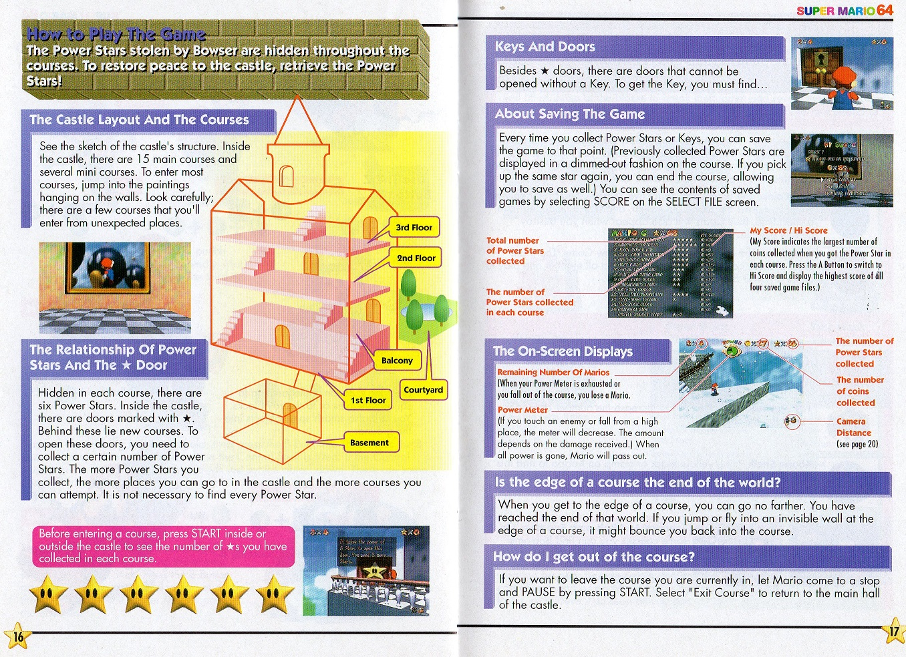
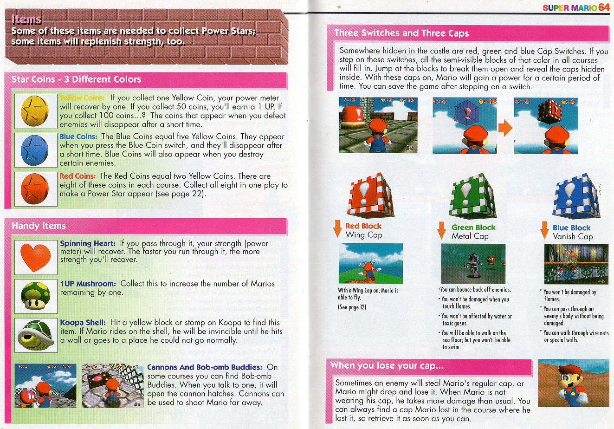
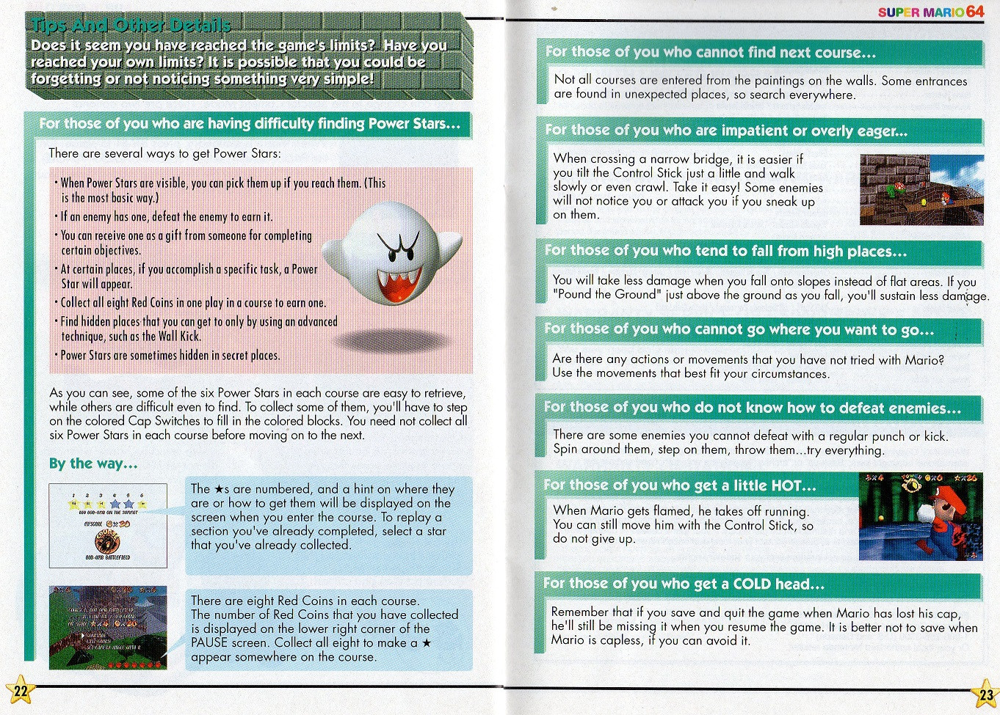

Everyone knows about 1996’s Super Mario 64, the best seller and revolutionary N64 game. There is a lot of picking and analysis of it and even the various differences between Japanese and English versions, the rereleases, etc. Less frequently covered however is it’s manual and the little details within, especially regarding it’s story. Nintendo hosts a pdf of the manual on the website but the overall layout and even a few images are altered. Here’s a link to that (leads to Nintendo UK) All scans from me.
It is written very nicely with a summary of what Mario experiences after getting Peach’s invitation and follows him even until he enters Bob-omb Battle Field. Bowser’s plan is to convert the residents of the painting worlds into monsters that will eventually overflow from the paintings. So of note here, there really is no explanation of why Peach has a magical art gallery in her castle. I would add ‘all of a sudden’ but this game debuted Peach’s Castle and there was no precedent set before now. Power Stars are stars that protect the castle. You must collect them to save the Kingdom. Take note of the numerous quotes from Mario himself in the intro. Older games sometimes did such a thing, like Super Mario World’s manual.
The rest of the manual talks about the controls very thoroughly, which is justified with the new exciting control stick and what not. Here are some notable tidbits: “Other ways to fly” is a section in the original that the pdf version lacks. It mentions that Mario can fly by stomping on special enemies then jumping or being carried by the wind. Possibly the pdf omits that because it’s slightly misleading. Mario spinning off of enemies like Spindrifts and plunging into the wind on courses like Tall Tall Mountain aren’t exactly the same as flying with the wing cap.
“How to play the game” is another altered section. The original as pictured has a stylized image of the castle’s layout. The text is the same but in the pdf version the castle diagram is replaced with an in game and low poly screenshot of the castle from an overhead view. Very odd, because this shows nothing about the layout even though the unaltered text tells you to “see the sketch of the castle’s structure” oops!!
The manual has an items page omitted by the pdf. It covers the coins and also explains spinning hearts, 1-ups, koopa shells, and more. The part about the colored blocks and caps are in both however, explaining how they work. A misconception I think is that some think the metal cap is bugged because you can take fall damage. Looking at the text however, it never claims that Mario is invincible with the cap on, just immune to enemy hits, gases, and flames.
The Camera operations is reduced a lot in the pdf with it only explaining the c-buttons but not the modes to change from the pause street. Only the original guide has a “Tips and other details” part. As shown, it mentions how to collect stars, the red coins, the fact that some level entrances are NOT in paintings, to ground pound if falling from far and etc. Some of these tips are in the game its self, but it’s nice to have it all on paper. Why the pdf changes things I’m not sure. Truncated manuals are a little more justified when we are talking about the kind built into Virtual Console re releases but as far as I know the pdf in the link is for the physical copy. Perhaps being a UK version makes a difference?
Castle layout in PDF version